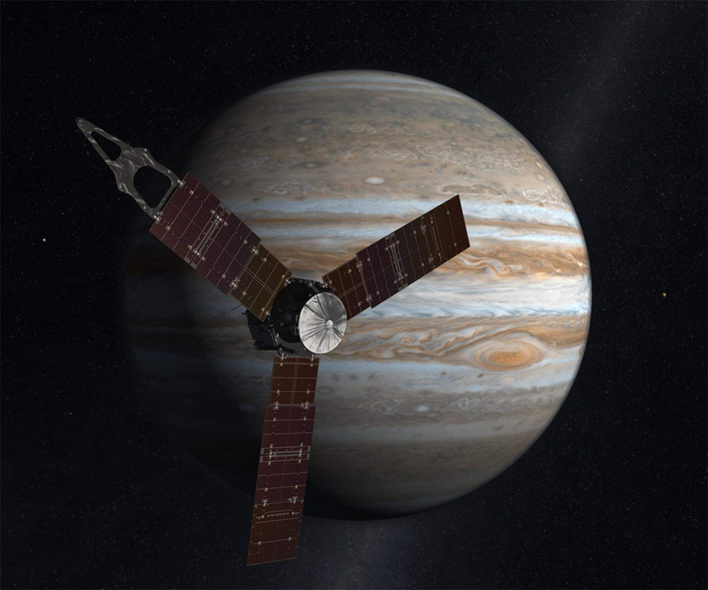

Juno
El 5 de agosto de 2011, la nave espacial Juno de la NASA se embarcó en un viaje de 5 años al planeta más grande de nuestro sistema solar: el gigante gaseoso Júpiter. Su misión fue sondear debajo de las densas nubes del planeta y responder preguntas sobre el origen y la evolución de Júpiter, nuestro sistema solar y los planetas gigantes en general en todo el cosmos. Juno llegó a Júpiter el 4 de julio de 2016, después de un viaje de 5 años y 1.700 millones de millas, y se instaló en una órbita polar de 53 días que se extiende desde justo por encima de las nubes de Júpiter hasta los confines de la magnetosfera joviana.
Los descubrimientos de Juno han revolucionado nuestra comprensión de Júpiter y la formación del sistema solar. Durante las 35 órbitas de Júpiter de la misión principal, Juno recolectó más de tres terabits (375 gigabytes) de datos científicos y proporcionó vistas deslumbrantes de Júpiter y sus satélites, todo procesado por científicos ciudadanos con la primera cámara de la NASA dedicada al alcance público.
Ahora en su misión extendida, el orbitador planetario más distante de la agencia continúa su investigación del planeta más grande del sistema solar hasta septiembre de 2025, o hasta el final de la vida útil de la nave espacial. Las campañas científicas de la misión extendida amplían los descubrimientos que Juno ya ha hecho sobre la estructura interior de Júpiter, el campo magnético interno, la atmósfera (incluidos los ciclones polares, la atmósfera profunda y las auroras) y la magnetosfera. La enigmática Gran Mancha Azul de Júpiter, un parche aislado de intenso campo magnético cerca del ecuador del planeta, es el objetivo de un estudio magnético de alta resolución espacial durante seis sobrevuelos al principio de la misión extendida.
A medida que la órbita de la nave espacial continúa evolucionando, se planean sobrevuelos adicionales de las lunas Europa e Io. Juno también volará a través del toro de Europa y el toro de Io. Estas son nubes en forma de rosquilla de partículas cargadas que rodean la órbita de cada luna. La nave espacial pasará a través de los toros en múltiples ocasiones, caracterizando el entorno de radiación cerca de estos satélites para preparar mejor la misión Europa Clipper de la NASA y la misión JUICE de la Agencia Espacial Europea para optimizar las estrategias de observación y la planificación, las prioridades científicas y el diseño de la misión. La misión extendida también agrega un estudio del polvo en los débiles anillos de Júpiter a la extensa lista de investigaciones científicas de Juno.
